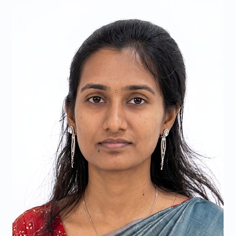
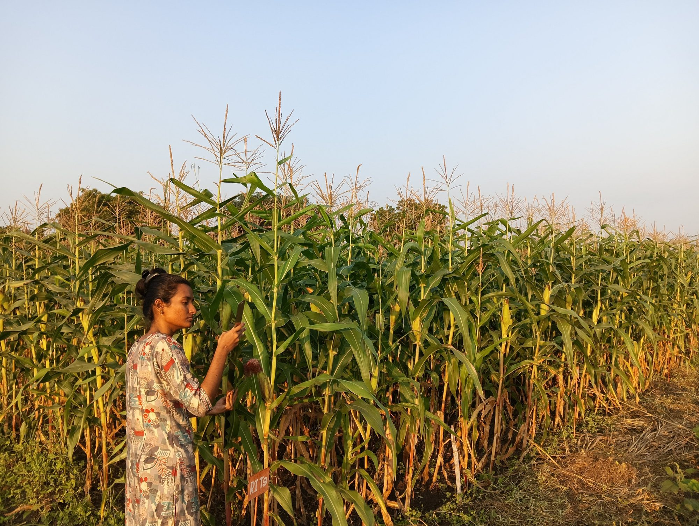
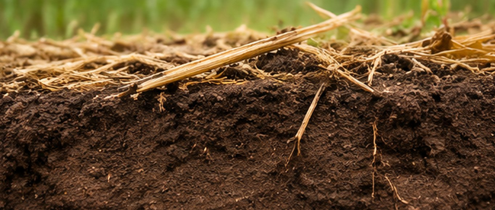
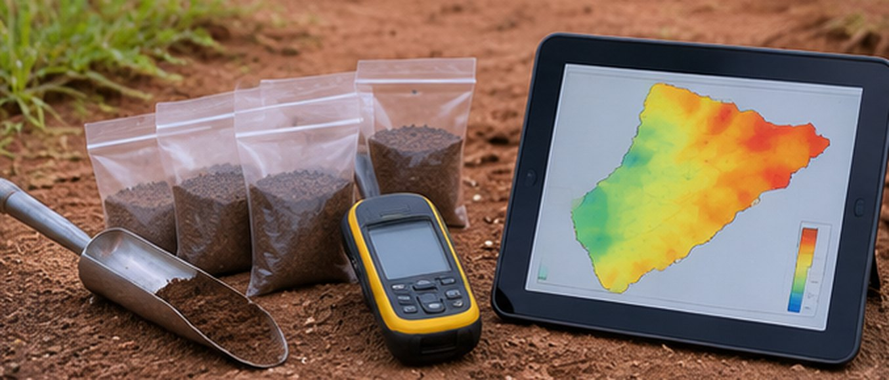
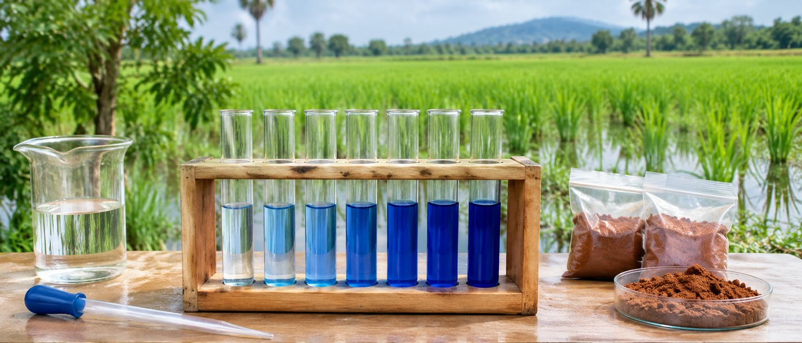
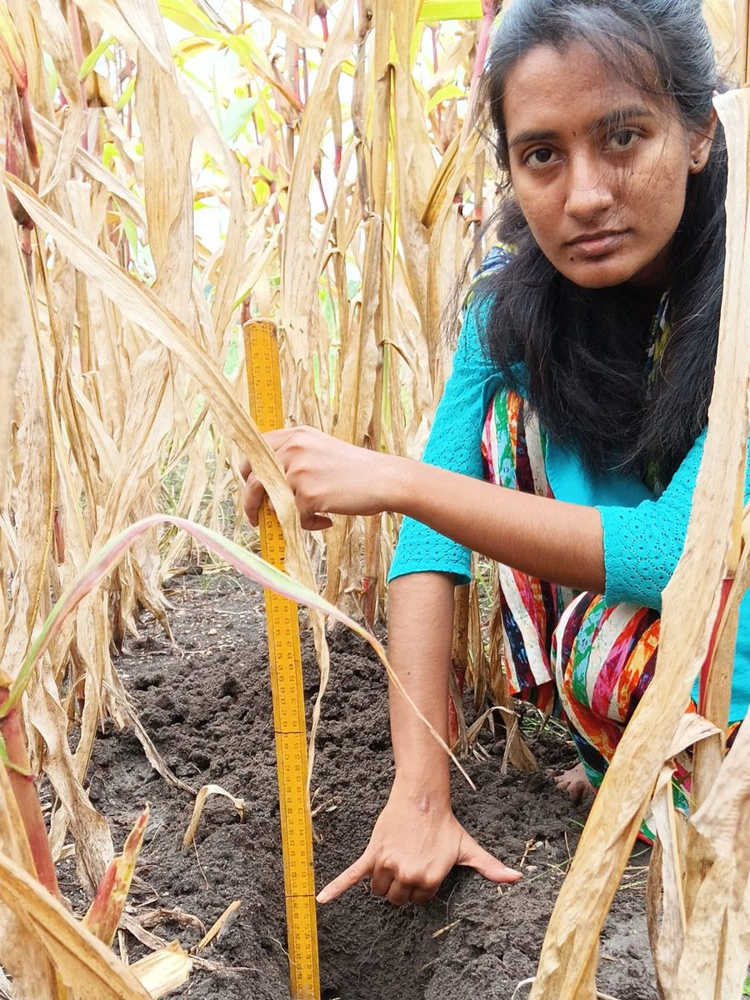
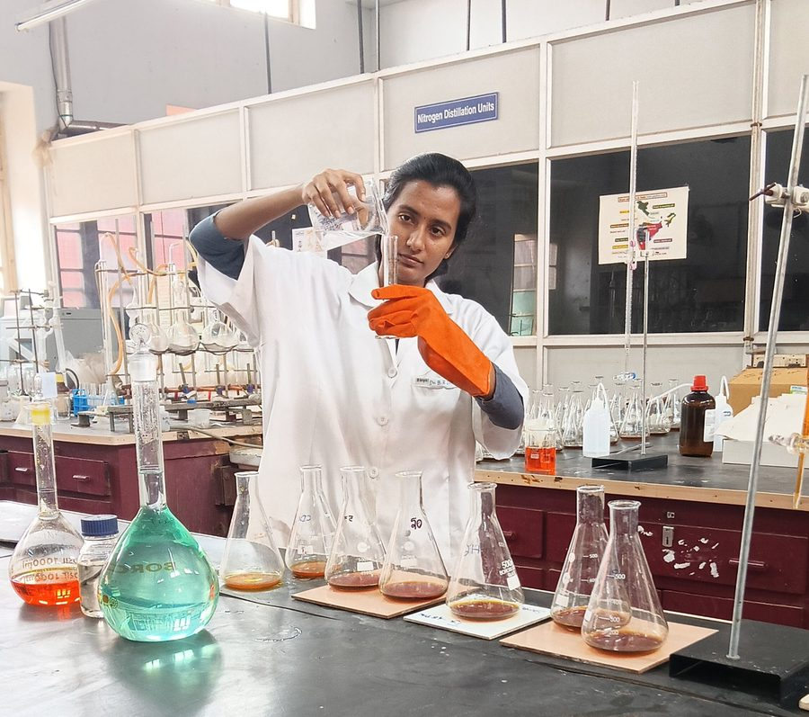
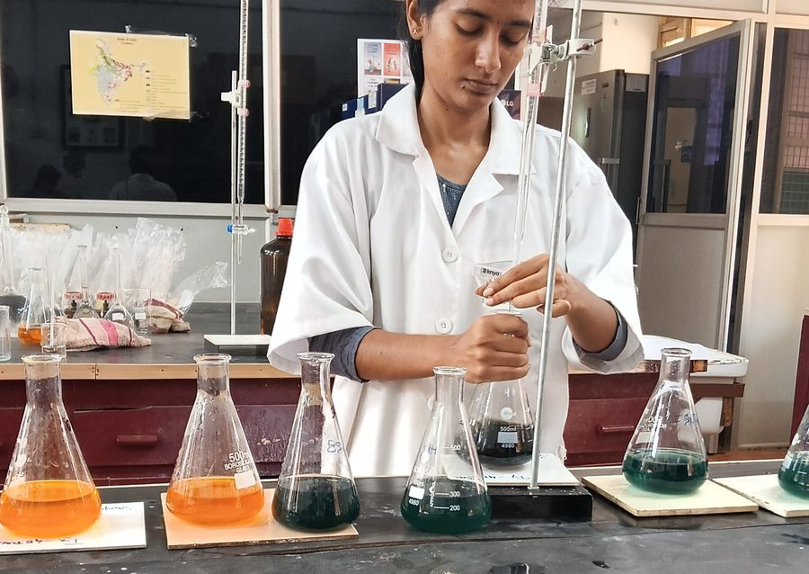

Soil scientist · Ph.D. Scholar, Soil Science & Agricultural Chemistry, Tamil Nadu Agricultural University
I study how soils store carbon in semi-arid farming: how long-term manuring and fertilization change soil carbon, nutrient dynamics and soil biology, and how models and machine learning can predict them.

I am a soil scientist working on soil carbon, carbon sequestration and carbon modelling in semi-arid agricultural systems. I combine long-term field experiments, laboratory analysis and modelling to understand how nutrient management influences soil carbon, nutrient dynamics, soil health and crop productivity.
My doctoral research uses a Permanent Manurial Experiment that has run since 1982 at the Agricultural Research Station, Kovilpatti, on a rainfed maize–cotton rotation. My interests include soil carbon dynamics, soil biology, digital soil mapping and machine learning in soil science. I welcome collaborations in these areas.

Organic and inorganic carbon stocks to 45 cm, labile and stable carbon fractions, carbon saturation and the carbon input needed to hold soil carbon in a 44-year experiment.
DNDC simulation of soil carbon from 1982 to 2055 under four climate pathways, and hybrid machine learning–process models for predicting soil organic carbon in drylands.

Mapping the spatial variability and uncertainty of sulfur and micronutrients across a semi-arid landscape with quantile regression forests and remote sensing.

M.Sc. research on phosphorus fractions in an Alfisol under a 23-year rice–rice long-term fertilizer experiment: integrating FYM and green manure with NPK improved phosphorus availability and retention.



Soil organic and inorganic carbon; carbon fractionation (POC, MAOC, POXC, humic substances); microbial biomass and soil enzymes; phosphorus fractionation; soil physical and chemical analysis.
DNDC soil carbon modelling; machine learning (random forest, quantile regression forest); geostatistics; statistical analysis in R and SPSS.
Remote sensing, GIS and digital soil mapping with ArcGIS, QGIS and Google Earth Engine; trained at IIRS–ISRO (2024).
Scientific writing and literature synthesis (systematic reviews); video lessons for TNPSC exam aspirants.